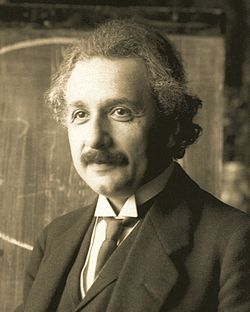
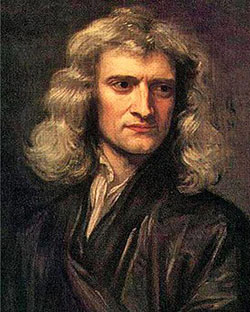
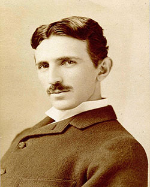
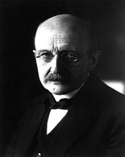
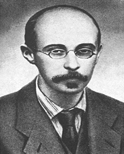

Альберт Ейнште́йн — один з найвизначніших фізиків XX століття. Лауреат Нобелівської премії 1921 року. Дійсний член Наукового товариства імені Шевченка. Народився 14 березня 1879 року в німецькому місті Ульм в єврейській родині. Мешкав у Швейцарії (з 1893), Німеччині (з 1914) і США (з 1933). Створив спеціальну (1905) і загальну (1907–1916) теорії відносності; відкрив закон взаємозв'язку маси і енергії (див. E=mc²). Автор основоположних праць з квантової теорії: ввів поняття фотона, встановив закони фотоефекту, основний закон фотохімії (закон Ейнштейна), передбачив (1916) вимушене випромінювання. Розвинув статистичну теорію броунівського руху, заклавши основи теорії флуктуацій, створив квантову статистику Бозе—Ейнштейна. З 1933 року р. працював над проблемами космології і єдиної теорії поля.
Сер Ісаа́к Нью́тон — англійський вчений, який заклав основи сучасного природознавства, творець класичної фізики та один із засновників числення нескінченно малих. У книзі «Математичні начала натуральної філософії» Ньютон сформулював закони руху, відомі як закони Ньютона й закон всесвітнього тяжіння, які стали основою наукового світогляду впродовж трьох наступних століть і мали великий вплив не тільки на фізику, а й на філософію. Використовуючи свою теорію Ньютон зумів пояснити закони Кеплера, що описують рух планет навколо Сонця, чим заперечив останні сумніви щодо геліоцентричної системи світобудови.
Ні́кола Те́сла — сербський та американський винахідник і фізик. Походив із сербської сім'ї, згодом став громадянином США. Тесла найбільш відомий своїми винаходами у галузі електрики, магнетизму та електротехніки. Зокрема йому належать винаходи змінного струму, поліфазової системи та електродвигуна зі змінним струмом. Був ключовою фігурою при побудові першої гідроелектростанції на Ніагарському водоспаді. Одиниця вимірювання магнітної індукції в системі СІ названа на честь дослідника.
Макс Карл Ернст Людвіґ Планк — німецький фізик-теоретик, основоположник квантової фізики. Лауреат Нобелівської премії з фізики (1918) та інших нагород, член Прусської академії наук (1894), низки інозмених накових товариств і академій наук. Упродовж багатьох років один із провідників німецької науки; дійсний члени НТШ.
Олекса́ндр Олекса́ндрович Фрі́дман — російський і радянський математик, фізик і геофізик, творець теорії нестаціонарного Всесвіту, автор рівнянь Фрідмана.
